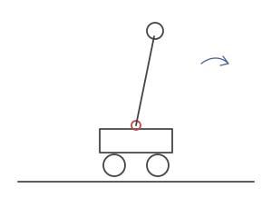

Plaksha
Entry 012: A cart-pole that balances like a person
- When
- independent project, after Control Systems
Question: when you push someone gently, they correct with their ankles. Push harder and they step back. How do they choose?
Model: a cart and pendulum with an extra motorised joint at the base of the pole.
- small disturbance: the joint motor corrects it (the ankle)
- large disturbance: the cart moves (the step)

push it. gently, then not gently.
It's gain scheduling, picking the right actuator for the size of the problem. This idea comes back underwater later.
[clip coming]